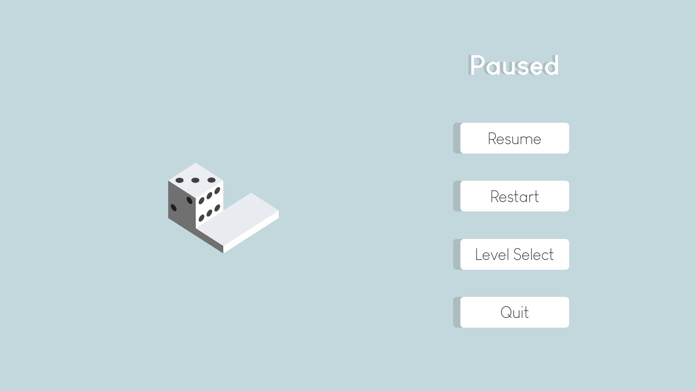
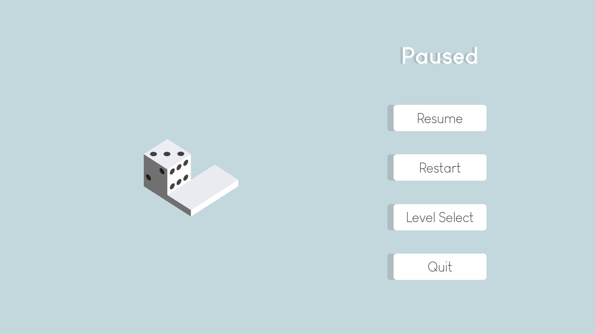

Game Description
DOS (two in Spanish) is a single-player puzzle game where the objective is to strategically roll the die to get the two-face on top! There are a few special tiles that allow for more complex movement of the die which adds a new layer to the puzzles. Some tiles only allow a certain face of the die to be on that tile, and prevent the player from moving onto that tile if the face is not correct. Others rotate or move the die in a certain direction. There is no "end" to each level, the player just needs to get the two-face on top by any means necessary.
This game was created for the 2022 Game Maker's Toolkit 48 Hour Game Jam. This year the theme was "Roll of the Dice", and my partner Gabriela Colón-Meléndez came up with the idea to take the theme more literally by making the player a physical die that rolls around. We would come to realize that this was the most common interpretation of the theme, but nonetheless the mechanics stand out a bit against the rest. Since this game was made for a game jam, we wanted the mechanics to be as intuitive as possible with very simple visuals. Gabriela and I created everything besides the music and sound effects for the game, and our game placed in the top 5% of over 6200 submissions.
My Thoughts
I am very proud of this project and the state we were able to get it to in 48 hours. I had a lot of fun developing it and the puzzles were really interesting to come up with. I do not think I want to develop the game any further than this, but the end result and the rankings in the jam gave me a lot of motivation to continue to make games as I feel like I am going in the right direction.
Music
Credits
 
